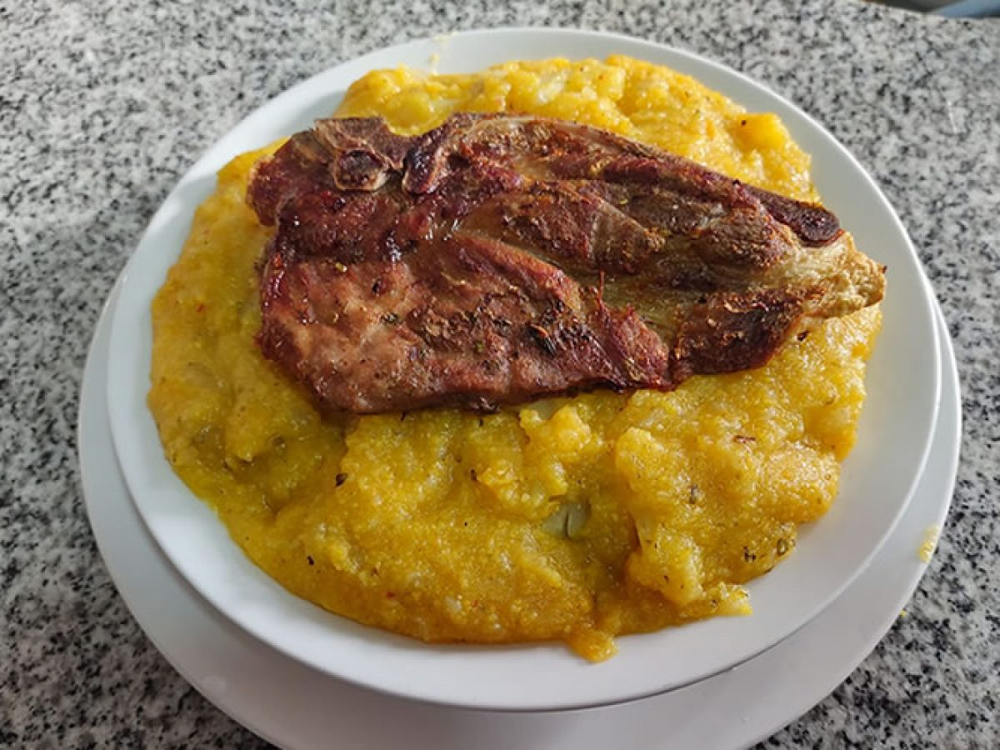
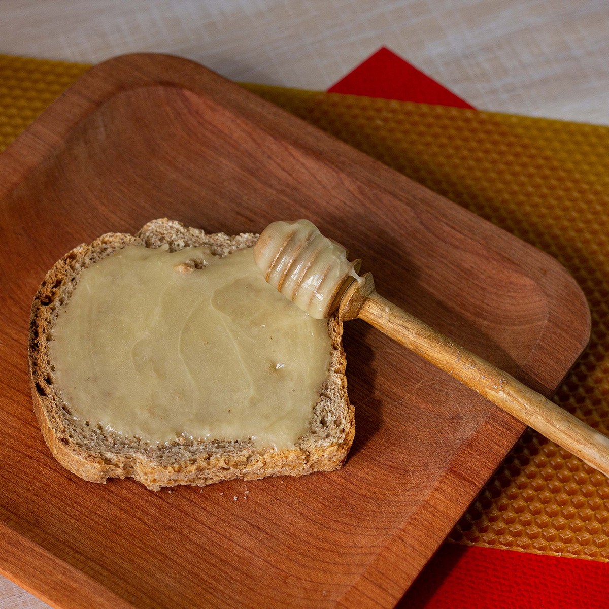
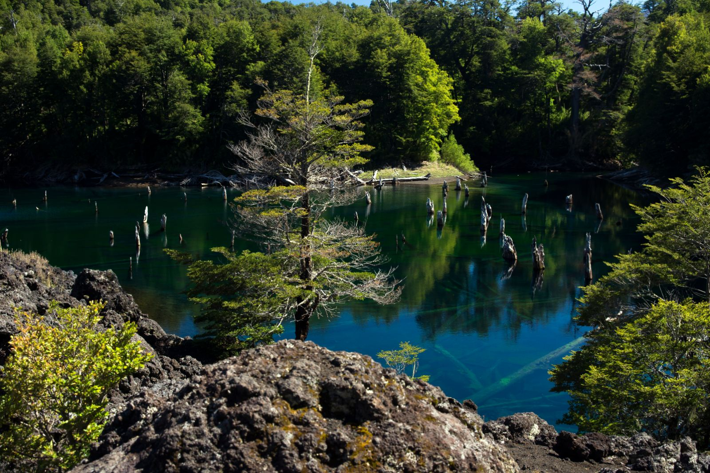
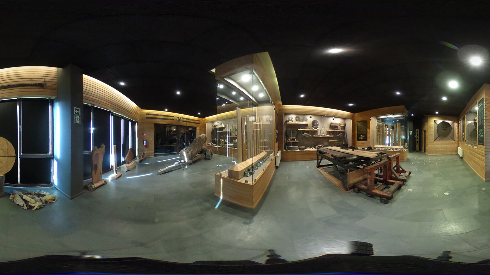

La gastronomía de Melipeuco, una comuna de la Región de la Araucanía, Chile, es una fusión de la cocina tradicional chilena y la gastronomía mapuche. Los platos típicos de la zona incluyen:
Platos destacados
Chuchoca

La chuchoca es un plato tradicional mapuche que se prepara con harina de maíz cocida en agua o leche. Se suele servir con carne, queso o verduras..
Miel de ulmo

El ulmo es un árbol nativo de Chile que produce una miel de color ámbar y sabor delicado. La miel de ulmo se puede encontrar en Melipeuco y en otros lugares de la Región de la Araucanía.
Cazuela
La cazuela es un guiso tradicional chileno que se prepara con carne, verduras y legumbres. En Melipeuco, la cazuela suele prepararse con cordero, papa, choclo y porotos.
Melipeuco, Chile, brinda entretenimiento a través de su espectacular entorno natural propicio para actividades al aire libre como senderismo y deportes acuáticos. Los visitantes también pueden explorar la cultura local a través de la artesanía y festivales, además de disfrutar de la deliciosa gastronomía chilena y mapuche.
Sendero Los Carpinteros
El sendero Los Carpinteros forma parte del Parque Nacional Conguillio ubicado en la Región de La Araucanía, Chile. Recorrer este sendero es posible desde el día martes a domingo teniendo en consideración que en el invierno puede haber abundante nieve Este es uno de los senderos más importantes debido a su belleza, diversidad de flora y fauna donde además es el albergue del Carpintero Negro debido a los bosques de araucarias y coihues. Uno de los atractivos de este sendero es la “araucaria madre” reconocida como una de las más grandes del parque y que además se estima su edad de 1.800 años con un diámetro de 3m.
Haz click en la imagen para mas información.
El Río Truful Truful (Agua Correntosa en Mapuzungun) es un atractivo natural y cultural a la vez, de mucha importancia para la comunidad local y el turismo, concentra un gran patrimonio ecológico marcado por un ecosistema donde conviven aves silvestres como Patos correntinos, mamíferos como el Huillin, flora nativa y sitios de interés geológico.
Hoy el Rafting es uno de los imperdibles si se trata de aventura y adrenalina en Melipeuco, comenzando en el hermoso Salto del Truful Truful obteniendo una vista impresionante y privilegiada. En el descenso descubriras mas de 10 rapidos repartidos en los Rios Truful Truful y Allipen.
Haz click en la imagen para mas información.
El Parque Nacional Conguillío, ubicado en Chile, es una reserva natural en la Región de La Araucanía. Destaca por su escenario impresionante que incluye bosques de araucarias, lagos, ríos y el imponente volcán Llaima. Ofrece oportunidades para explorar la naturaleza a través de senderismo, ciclismo, observación de fauna y flora, y camping. Es un refugio donde se preserva la belleza natural y se fomenta un turismo responsable.
Lago Arcoíris

El Lago Arcoíris, situado en el Parque Nacional Conguillío en Chile, destaca por sus aguas multicolores y transparentes, fruto de su origen glaciar. Rodeado de bosques de araucarias y montañas, es un escenario ideal para actividades acuáticas como kayak y pesca, así como senderismo en sus alrededores. Forma parte de un entorno natural protegido, fomentando un turismo sostenible y la conservación de su biodiversidad.
Cultura de Melipeuco
Melipeuco, en la Región de La Araucanía en Chile, tiene una cultura arraigada en la herencia mapuche y chilena. La comunidad mapuche conserva tradiciones, artesanías y festividades importantes, como el Wiñol Tripantu (Año Nuevo Mapuche). La gastronomía destaca por platos tradicionales chilenos y mapuches, utilizando ingredientes autóctonos. El idioma mapudungun y la música tradicional son elementos clave en su cultura.
Museo Histórico de Melipeuco
El Museo Histórico de Melipeuco, patrimonio cultural de la comuna, fue abierto al público con colección permanente el 16 de febrero del año 2017 con la muestra comunitaria “Huellas de un Pasado Maderero”, esta muestra es parte del trabajo en conjunto entre la comunidad y la Municipalidad de Melipeuco.
Haz click en la imagen para mas información.
 Feria Artesanal de Melipeuco
Feria Artesanal de Melipeuco está en Región de la Araucanía ubicado en Pedro Aguirre Cerda. Feria Artesanal de Melipeuco está situada circa del parque Plaza Melipeuco y del lugar de culto Templo Bautista El Redentor.
Haz click en la imagen para mas información.